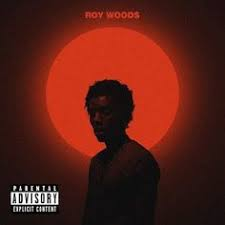

Home
Iniciar sesión
Mi lista
k
Ser prime
Informacion
Navbar Link
menu
Nombre de Cancion
Artista
Album
Genero
Link to Youtube
Nombre de Cancion
Artista
Album
Genero
Link to Youtube

Nombre de Cancion
Artista
Album
Genero
Link to Youtube